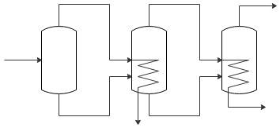

平成26年度 問32 化学プロセス
水溶液を濃縮するための三重効用蒸発缶がある。蒸発缶の伝熱面積は3缶ともに10 m2、第1缶、第2缶、第3缶の操作圧力はそれぞれP1＞P2＞P3、蒸発蒸気温度はT1＞T2＞T3である。第1缶は132℃のスチームで加熱しており、蒸発蒸気温度T1は94℃である。第2缶の加熱に用いられた凝縮水量を計測したところ。1時間当たり456 kgであった。各缶での沸点上昇は第1缶で0℃、第2缶で2℃、第3缶で4℃である。各缶の総括伝熱係数（熱貫流係数）は操作圧力、温度に関係なく一定とした場合、第3缶の蒸発蒸気温度T3として、最も適切な値はどれか。
なお、水の蒸発熱及び凝縮熱ともに500 kcal/kgで一定とする。
三重効用蒸発缶は多重効用蒸発装置の一種です。前缶の蒸発物が次缶の加熱媒体として使用されます。次の缶に進むごとに缶内を減圧することで沸点を下げて温度差を得ます。三重効用蒸発缶は3つの蒸発缶が連結した構成です。

伝熱の式Q＝UAΔTの式を用います。総括伝熱係数および伝熱面積は各缶で同じため、UおよびAとして各缶の伝熱量を考えます。第一缶～三缶までの伝熱量をQ1, Q2,Q3、第二缶および第三缶の蒸発蒸気温度をT2, T3とします。
蒸発蒸気回収の観点から、第一缶の蒸発蒸気を全て凝縮させる必要があります。第一缶の伝熱量は全て水の蒸発に使われたと考えると、蒸発蒸気を全て凝縮させるには第一缶での伝熱量分の熱を第二缶の加熱に使用する必要があります。つまり第一缶と第二缶の伝熱量は同じ（Q1＝Q2）です。同様に、第二缶と第三缶の伝熱量も同じです。伝熱量はQで統一して表せます。
上記内容をまとめると、各缶で伝熱面積A、総括伝熱係数U、伝熱量Qは同じ、蒸発蒸気温度Tのみ異なります。
第一缶目は蒸気加熱温度132℃、蒸発蒸気温度94℃です。Q＝UAΔT＝UA(132-94)と立式できます。Q/UA＝38です。
第二缶目は蒸気加熱温度94℃、蒸発蒸気温度T2℃です。Q＝UAΔT＝UA(94-T2)と立式できます。Q/AU＝38＝94-T2より、T2＝56です。
注意点として、T2は第二缶の液温です。蒸発に伴い溶質の濃度が上がることで沸点上昇が起こります。当然、蒸発蒸気に溶質は含まれないため、水溶液と蒸発蒸気の温度が異なることを意味します。
第二缶では2℃沸点上昇していることから、第二缶の蒸発蒸気温度は56-2＝54℃です。
第三缶目は蒸気加熱温度54℃、蒸発蒸気温度T3℃です。Q＝UAΔT＝UA(54-T3)と立式できます。Q/AU＝38＝54-T2より、T3＝16です。第三缶では沸点上昇が4℃起きていることから、蒸発蒸気温度は16-4＝12℃となります。